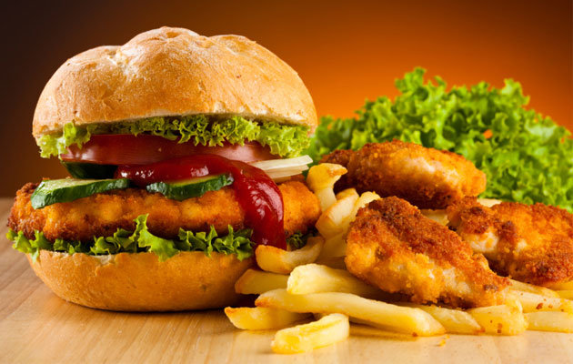

Dylan Uys

Bio
A UCSD CSE student who truly loves both computer science and food. Special interest in data science and seafood. Admittedly learned the web the wrong way (see "toomanydamnframeworks.png" above) and wants to atone for his sins.
Contact
- email address - duys@ucsd.edu
Chang Gwoun
Bio
Hi, I'm a Korean from Torrance, Ca that loves food :)
Contact
- email address - cgwoun@ucsd.edu
Mauricio Panelo

Bio
Native San Diegan studying computer science for great good! Let it be known that I'm no longer a fan of the Chargers.
Contact
- email address - mpanelo@ucsd.edu